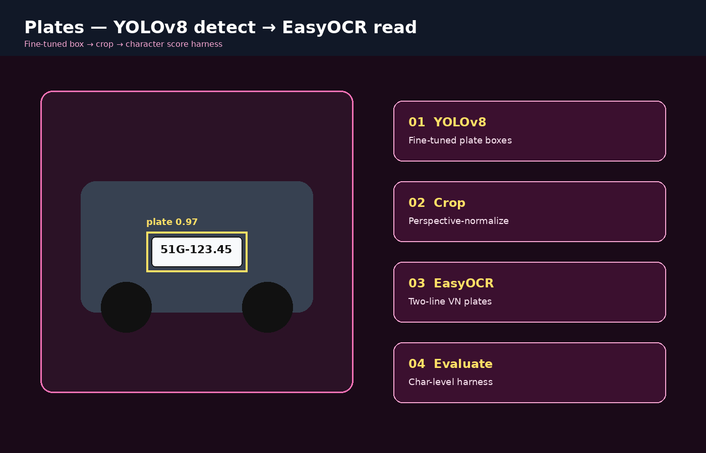

01
Detect
YOLOv8 / OBB weights find plate boxes in frame — detect.py / detect_v2.py.
Plates
Nhận diện biển số bằng YOLOv8 + EasyOCR. Landing + live browser OCR trên Azure F1; cùng engine trên Hugging Face static Space.
Pipeline
Same stack as the repo: Ultralytics detect, plate preprocess, EasyOCR allowlist, eval scripts.
YOLOv8 / OBB weights find plate boxes in frame — detect.py / detect_v2.py.
Border trim, histogram equalization, 2× cubic upscale so OCR sees cleaner glyphs.
EasyOCR English allowlist with two-line plate assembly for Vietnamese layouts.
evaluate_ocr.py scores cropped plates against labeled text — iterate before you ship gates.

How it works
Local GPU/CPU for the full Python stack; this host stays a light SaaS shell.
Camera still, folder batch, or upload in the app shell / HF demo.
YOLO draws the plate ROI; preprocess prepares the crop for OCR.
EasyOCR returns alnum text; compare with eval or watchlist workflows.

Full YOLOv8 + EasyOCR needs a roomy host (not App Service F1). The Azure app runs Tesseract.js in-browser for live plate text; the HF Space mirrors that demo. Source stays in GitHub.
pip install -r requirements.txt python train.py python detect.py --source path/to/image.jpg --show python evaluate_ocr.py
Pricing
No invented paid infra. What you see is what runs on student/free SKUs.
Clone the repo, train/detect locally, use this landing + app shell on Azure F1.
Run the Python pipeline on a GPU/CPU box you control — gates, lots, campus cameras.